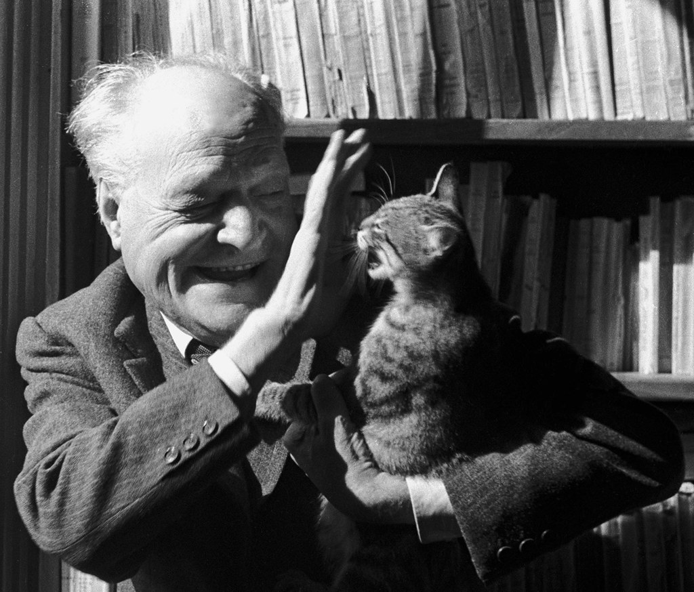
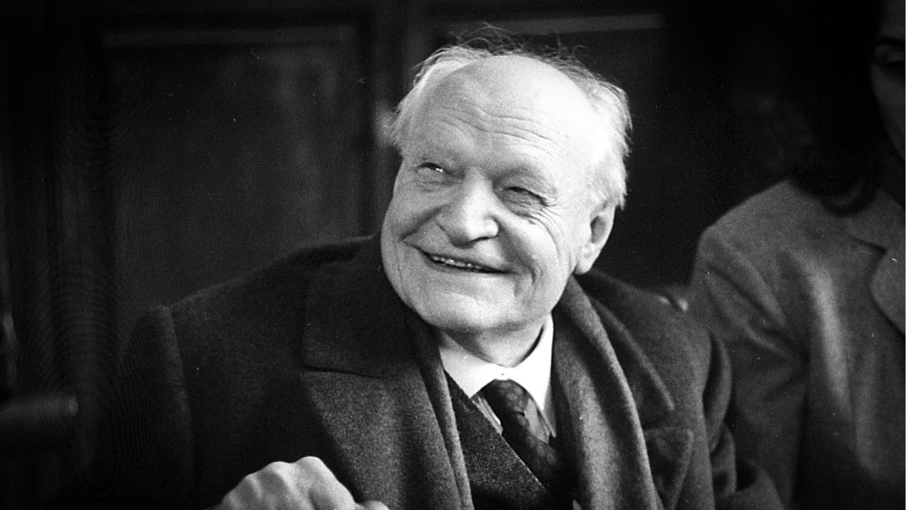
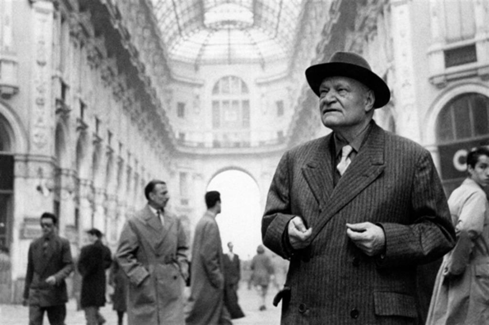

Poeta italiano, nasce ad Alessandria d'Egitto,, da genitori lucchesi, colà emigrati, perché il padre Antonio lavorava come sterratore al canale di Suez. Frequenta l'École Suisse Jacot e si forma sui classici francesi: Baudelaire e Mallarmé soprattutto. Stringe amicizia con Enrico Pea e i fratelli Thuile; con Kavàfis e Zervos (il gruppo di "Grammata"). Nel U. migra a Parigi, si iscrive alla Sorbona (tesina su Maurice de Guérin con Strowski; segue i corsi di Bergson al Collège de France). Si lega ai futuristi italiani a Parigi - le sue prime poesie appariranno nel 1915 su Lacerba - ma anche ad Apollinaire, Paul Fort, Léger. Nel 1914 rientra in Italia e si arruola come volontario, soldato semplice, sul Carso. Nasce Il Porto Sepolto, stampato a Udine nel 1916. Finita la guerra, pubblica, per impulso di Papini, Allegria di naufragi, presso Vallecchi, 1919. Sposa Jeanne Dupoix, 1920. Si trasferisce a Roma nel 1921, una Roma barocca e cattolica, che fa da sfondo al Sentimento del Tempo, 1933. Nel 1936 si stabilisce a San Paolo del Brasile, ove gli è stata offerta la cattedra di Lingua e letteratura italiana presso l'università. Nel 1937 muore il fratello, nel 1939 il figlio Antonietto; nel 1942 rientra in Italia, ove è nominato "per chiara fama" titolare della prima cattedra di Letteratura italiana contemporanea presso l'università di Roma. Dai lutti privati e collettivi nasce l'esperienza del Dolore, 1947. Dalla vicenda di barbarie della seconda guerra mondiale sorge più alta l'esigenza di raccogliere, nella meditazione dei classici, la memoria della dignità e della tragedia di essere uomini: saranno le mirabili traduzioni dei 40 Sonetti di Shakespeare, delle Visioni di Blake, della Fedra di Racine, delle poesie di Gongora e Mallarmé, dell'Eneide e delle "Favole indie della genesi". Potrà così compiersi il viaggio e l'ultima 'mira': La Terra Promessa, 1950 e Il Taccuino del vecchio, 1960; rielabora poi, 'a lume di fantasia', le prose d'arte e di viaggio: Il Deserto e dopo, 1961. Raffinato esercizio di autoesegesi e di poetica sono le quattro lezioni, tenute nel 1964 alla Columbia University, New York, sulla Canzone. Muore a Milano nella notte fra il 1° e il , già accolti, a Capodanno, "Gli scabri messi emersi dall'abisso", in una poesia che sempre "torna presente pietà" (L'impietrito e il velluto). L'opera di U. è oggi riunita nei volumi Vita d'un uomo. Tutte le poesie (a cura di L. Piccioni, 1969); Vita d'un uomo. Saggi e interventi (a cura di M. Diacono e L. Rebay, 1974); Vita d'un uomo. Viaggi e lezioni (a cura di P. Montefoschi, 2004). Alla conoscenza del laboratorio giovanile ungarettiano ha contribuito il vol. di Poesie e prose liriche. 1915-1920 (a cura di C. Maggi Romano e M. A. Terzoli, 1989), autografi ritrovati, con le lettere, tra le carte di Papini. In ed. crit. sono apparsi: L'allegria (a cura di C. Maggi Romano, 1982) e Sentimento del tempo (a cura della stessa e di R. Angelica, 1988).
Filologia d'autore: Giuseppe Ungaretti




